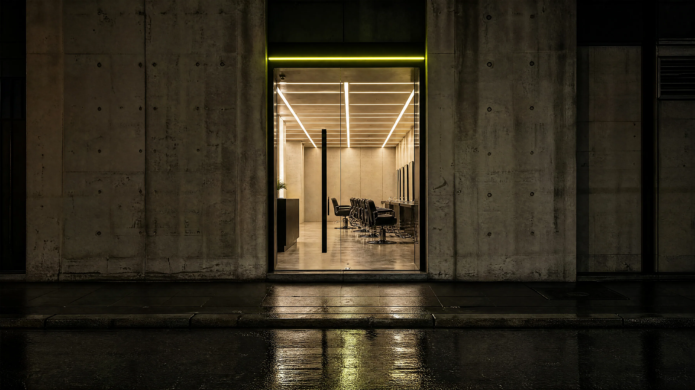
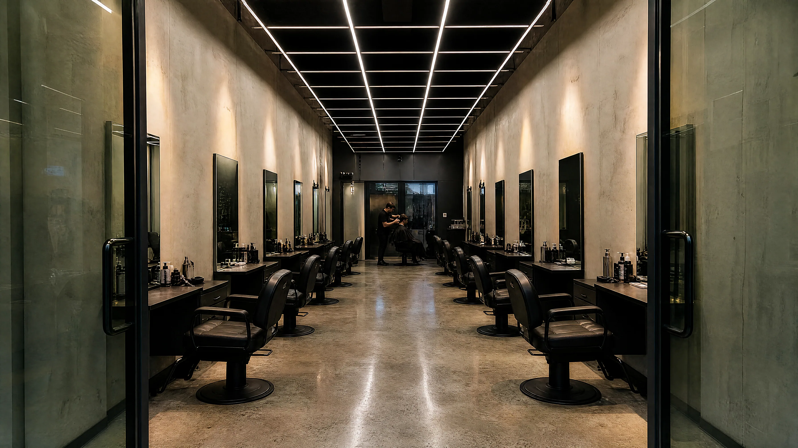
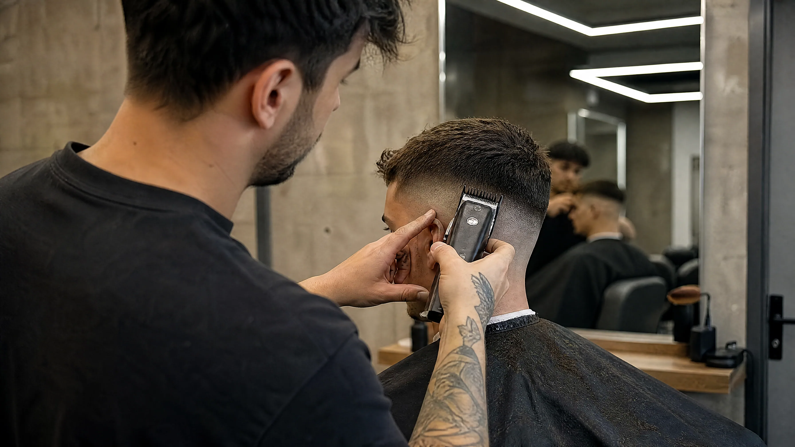
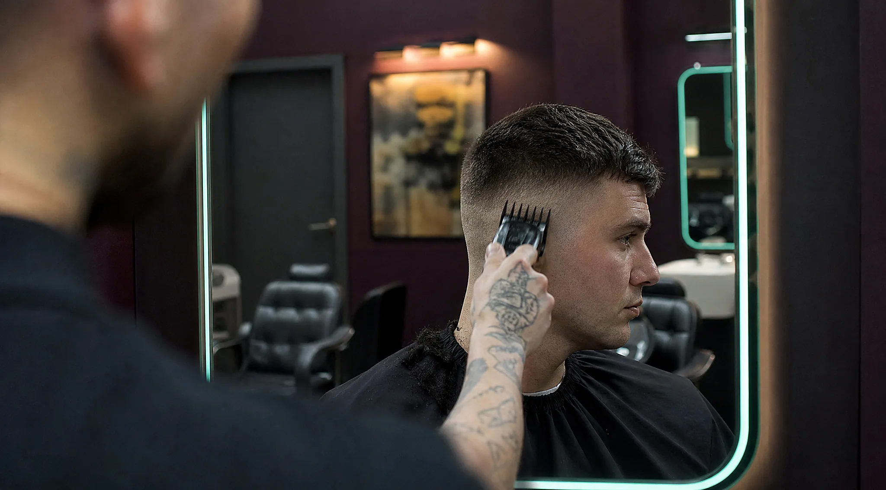
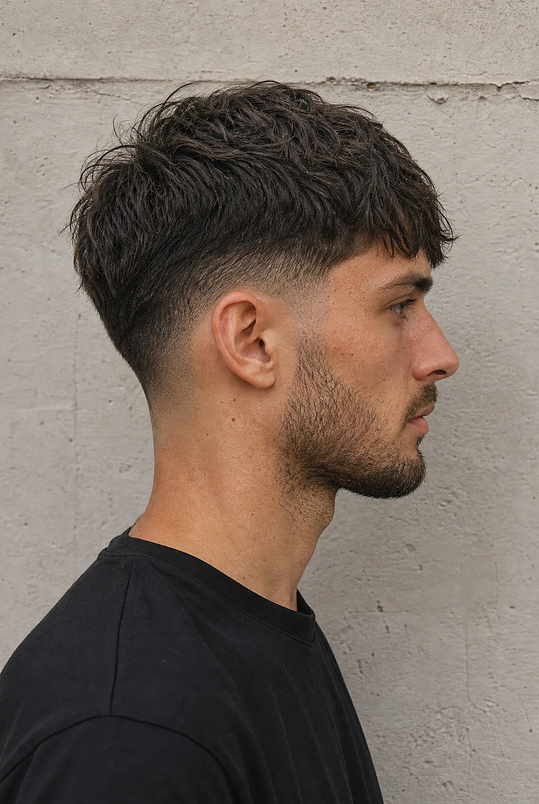
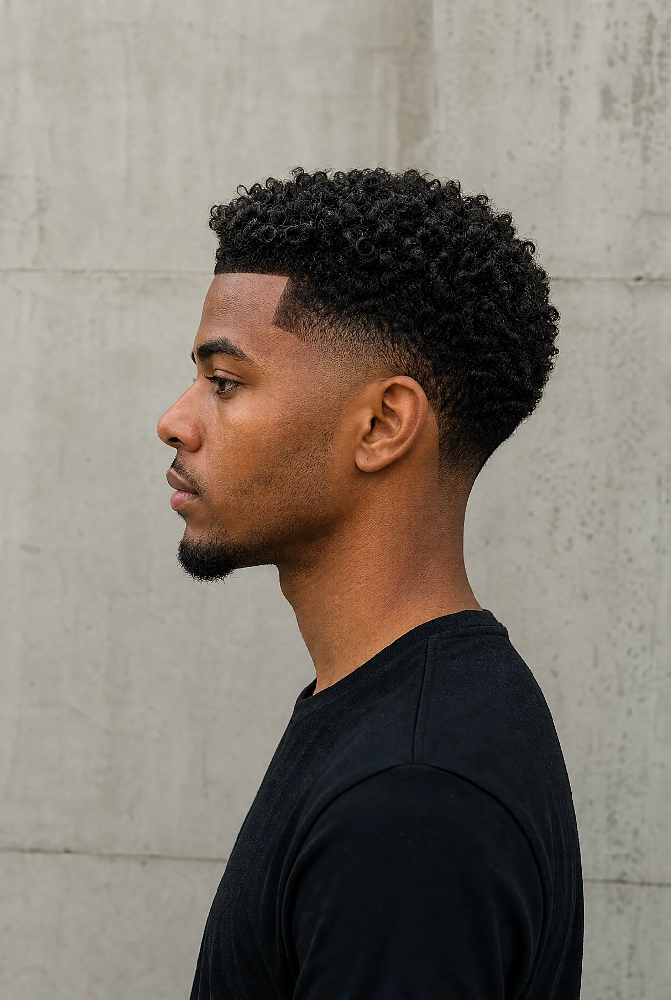
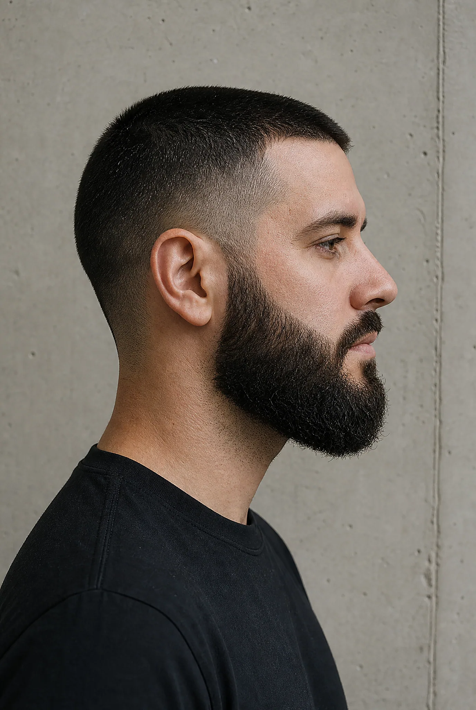

Walk-in Di – Fr 10 – 13
Ohne
Umweg.
Scroll und komm rein. Von der Straße bis zum Stuhl.
Zwölf Stühle.
Ein Anspruch.
Der Fade
sitzt.
Jeder Übergang freihand ausgeblendet. Ohne Kante, ohne Eile.

Null
Kompromiss.
Wir schneiden nur Männer – und das jeden Tag. Fade, Bart, Kontur. Keine Wartezeit ohne Ansage, keine Linie, die nach drei Tagen schief ist.
Wie wir fadenWas wir
können.
Vier Schnitte, die wir täglich machen. Tipp auf einen Look: Ablauf, Pflege, wann du wiederkommen solltest.



Mid Fade
Auf Schläfenhöhe. Der Klassiker, sichtbar, aber nicht laut.
Leistungen
Dauer statt Preisliste – den Preis siehst du beim Buchen.
Dein
Stuhl.
Barber wählen, Zeit wählen, fertig. Kein Anruf, während die Maschine läuft.
3 von 12 Stühlen frei · Walk-in lohnt sich

Wie immer?
Skin Fade bei Milan, nächster freier Termin.
1 · Leistung
2 · Barber
3 · Tag & Zeit
Demo: Zeiten und Stuhlplan sind Beispiele, es wird nichts gebucht.
Ausbildung zum Friseur mit Barber-Schwerpunkt, Abendkurse jeden Mittwoch, Meister bezahlt. Und wir suchen Barber mit Erfahrung – feste Stammkunden ab Tag eins.
Alles zur AkademieBewerben in 60 Sekunden
Danke.
Demo: Es wurde nichts gesendet. Im echten Betrieb meldet sich Ben innerhalb von 48 Stunden.
Friseursalons in Deutschland Ende 2025 – 245 weniger als im Jahr davor.
neue Ausbildungsverträge Friseur/-in 2025, bundesweit.
Friseur-Azubis in NRW seit 2014. Barber werden gebraucht.
Quellen: Zentralverband des Deutschen Friseurhandwerks, PM 06/2026 (Salons; Ausbildungsverträge nach BIBB); Bezirksregierung Arnsberg. Stand 11/2026.
„Seit Monaten derselbe Barber, derselbe Schnitt. Ein Tipp und gebucht.“
Beispiel · noch keine echte Bewertung„Walk-in um zehn, um halb elf saß der Fade.“
Beispiel · noch keine echte Bewertung„Die Linie am Nacken hält wirklich zwei Wochen.“
Beispiel · noch keine echte BewertungDieser Musterbetrieb hat noch keine echten Bewertungen. Im echten Betrieb stehen hier Google-Note, Anzahl und Stand.